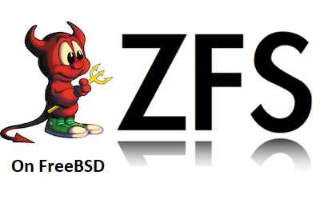

FreeBSD¶

Installation on FreeBSD¶
OpenZFS is available pre-packaged as:
the zfs-2.0-release branch, in the FreeBSD base system from FreeBSD 13.0-CURRENT forward
the master branch, in the FreeBSD ports tree as sysutils/openzfs and sysutils/openzfs-kmod from FreeBSD 12.1 forward
The rest of this document describes the use of OpenZFS either from ports/pkg or built manually from sources for development.
The ZFS utilities will be installed in /usr/local/sbin/, so make sure your PATH gets adjusted accordingly.
To load the module at boot, put openzfs_load="YES" in
/boot/loader.conf, and remove zfs_load="YES" if migrating a ZFS
install.
Beware that the FreeBSD boot loader does not allow booting from root pools with encryption active (even if it is not in use), so do not try encryption on a pool you boot from.
Development on FreeBSD¶
The following dependencies are required to build OpenZFS on FreeBSD:
FreeBSD sources in /usr/src or elsewhere specified by SYSDIR in env. If you don’t have the sources installed you can install them with svnlite.
Install source For FreeBSD 12:
svnlite checkout https://svn.freebsd.org/base/stable/12 /usr/src
Install source for FreeBSD Current:
svnlite checkout https://svn.freebsd.org/base/head /usr/src
Packages for build:
pkg install \ autoconf \ automake \ autotools \ git \ gmake \
Optional packages for build:
pkg install python37 # or your preferred Python version pkg install py37-sysctl # needed for arcstat, arc_summary, dbufstat
Packages for checks and tests:
pkg install \ base64 \ bash \ checkbashisms \ fio \ hs-ShellCheck \ ksh93 \ pamtester \ py37-flake8 \ python37 \ sudo
Your preferred python version may be substituted. The user for running tests must have NOPASSWD sudo permission.
To build and install:
# as user
git clone https://github.com/openzfs/zfs
cd zfs
./autogen.sh
./configure
gmake -j`sysctl -n hw.ncpu`
# as root
gmake install
To use the OpenZFS kernel module when FreeBSD starts, edit /boot/loader.conf :
Replace the line:
zfs_load="YES"
with:
openzfs_load="YES"
The stock FreeBSD ZFS binaries are installed in /sbin. OpenZFS binaries are installed to /usr/local/sbin when installed form ports/pkg or manually from the source. To use OpenZFS binaries, adjust your path so /usr/local/sbin is listed before /sbin. Otherwise the native ZFS binaries will be used.
For example, make changes to ~/.profile ~/.bashrc ~/.cshrc from this:
PATH=/sbin:/bin:/usr/sbin:/usr/bin:/usr/local/sbin:/usr/local/bin:~/bin
To this:
PATH=/usr/local/sbin:/sbin:/bin:/usr/sbin:/usr/bin:/usr/local/bin:~/bin
For rapid development it can be convenient to do a UFS install instead of ZFS when setting up the work environment. That way the module can be unloaded and loaded without rebooting.
reboot
Though not required, WITHOUT_ZFS is a useful build option in FreeBSD
to avoid building and installing the legacy zfs tools and kmod - see
src.conf(5).